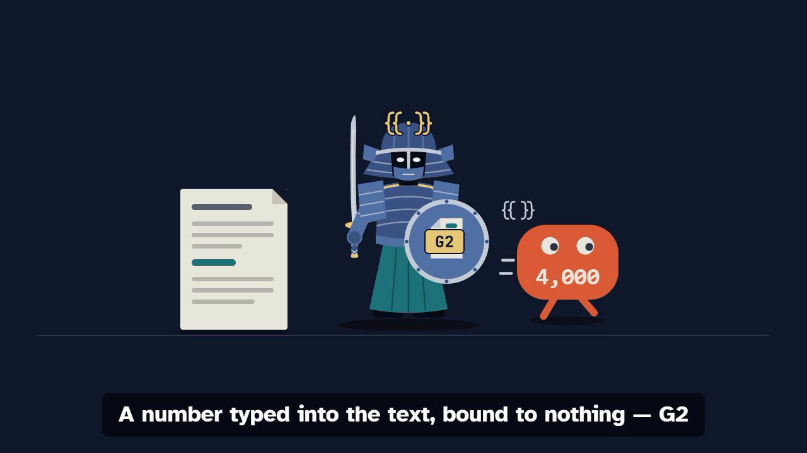

Every number traceable to its source.
manuscript-guard holds a scientific manuscript to the analysis that produced it, the sources it cites and the plan it was written to. Its checks are code, not a model: they run offline, on your computer or in continuous integration (CI), and give the same answer each time.
For researchers writing a paper, and for the co-authors, supervisors, editors and referees who read one.
- Check a paper in your browser A .docx or Markdown file, read on your computer and not uploaded. Nothing to install.
- Start a paper What you need, what the gates, an agent and you each do, and the first hour.
- See it catch a mistake One number typed into the abstract, and what the check says.
- For supervisors and groups The same checks across a group's papers, and a record of who approved what.
The problem
A number typed is a number that can drift
Say the abstract reads 4,000 reports. The data are cleaned, the analysis is run again, and it now says 3,986. The abstract still says 4,000, because someone typed it.
In a manuscript-guard project the abstract holds
{{results.cohort.n_reports}} instead, and the build writes in the number
the analysis wrote. Run the analysis again and rebuild, and every bound number
follows. A number in a paper comes from one of three places:
Your results
A binding into the results file your Python or R code writes.
The literature
A binding into a ledger, beside the sentence of the stored source it was quoted from.
A convention of writing
The common ones are built in, such as the 95 of a 95% confidence interval. Any other is justified once, in
paper.yaml.
A number that is none of these is a finding of the check, not something left for a reviewer to notice.
The demo
See it catch a mistake
In under a minute: a number typed over its binding in the worked
example that comes with the tool, and what check says of it; then some of
the mistakes the gates catch, and what is left to a co-author. The video has no sound; its words are on
screen, and below it.

The words of the video
- A paper is full of numbers.
- Each one should come from somewhere.
- Type one in by hand, and it drifts from the analysis.
- manuscript-guard finds it, and says where.
- Bind it to the result, and it follows the analysis.
- A number typed into the text, bound to nothing — G2
- A results file edited by hand — G1
- A retracted work, still cited — G7
- A DOI that names another work — G7
- The plan changed after the first results, and nothing said — G12 warns
- The analysis changed since the Methods were read — G9
- Some mistakes no check can see.
- A co-author reads those. manuscript-guard asks them, one page each.
- Check a paper in your browser, or start one.
Who decides
The gates decide, an agent helps, a person judges
The gates
Seventeen gates, each code that decides from the project's records, offline and in CI. No gate asks a model anything; two of them read a recorded review, which a person or a model may have written.
An agent, if you use one
Claude Code, Codex or another agent tool, with a skill for each step, drafts the plan, writes and runs the analysis, binds the numbers, drafts the prose and fixes what the check finds. Everything runs without one.
A person
Approves the manuscript, signs off what is theirs to close, and judges whether a passage supports its sentence. You are asked before the manuscript is sent to a model provider.
What it catches
Vord and the mistakes the gates catch
Vord, the guard, stands for the gates. Each villain is a mistake that a gate catches, named with that gate.
-

The Stray Number
A number typed into the text, bound to nothing.
G2 -

The Forger
A results file edited by hand.
G1 -

The Ghost Citation
A retracted work, still cited.
G7 -

The Impostor DOI
A DOI that names another work than the one cited.
G7 -

The Plan Rewriter
The plan changed after the first results, and the Deviations say nothing.
G12 -

Stale Methods
The analysis changed since the Methods were last read against it.
G9


What no gate catches
A mistake no gate sees is a shadow. Vord's sword passes through it, so Vord calls a co-author, who reads what no gate can. Each co-author gets a page of things to confirm: whether a sentence says what its source says.
-

Confirmation bias
It lies in what the authors chose to look at.
-

Data leakage
No gate reads the analysis code for test data used in training.
-

The co-author
The person who reads what no gate can.


Status
What it rests on so far
It is alpha.
- A real paper. One manuscript, a narrative review by the toolkit's
author, has been through
check,buildandverify, which ran its analysis again and reproduced each of its 1,483 values. - A measured set. The reference checks, on the 740 references of 16 published open-access pharmacology and epidemiology papers: as published, 1.49 false alarms per 100 references.
- Not measured. How much of a study an agent can carry with it, and whether the research is better for it. No study has yet gone from its plan to publication with the toolkit.
Install
Two ways in
I have a manuscript
Open the audit page, or at a terminal, with uv and nothing else installed:
uvx manuscript-guard audit paper.docxI am starting a project
With Python 3.10 or later:
pip install manuscript-guard
manuscript-guard init my-paper
cd my-paper
manuscript-guard nextnext says what to do now, with the command to run. To build a .docx
you also need pandoc; installing
has the rest.